Histology of the Gynecologic Tract
- One plan, repeated. Every organ in the tract is mucosa → muscle → outer coat. Only the mucosa changes — so name the epithelium and you have named the organ.
- The epithelium map: keratinized squamous (labia majora) → non-keratinized squamous (labia minora, vagina, ectocervix) → columnar glandular (endocervix, endometrium) → ciliated + secretory columnar (tube) → cuboidal (ovarian surface).
- The transformation zone is where squamous has replaced columnar. It is the most common site of cervical neoplasia, and it is what every Pap test is trying to sample.
- Endometrium in one line each: straight glands + mitoses = proliferative (estrogen). Coiled sawtooth glands + secretions = secretory (progesterone). Collapse + blood = menstrual.
- Follicle sequence: primordial → primary → secondary (antrum appears) → Graafian → corpus luteum → corpus albicans.
Learning Objectives
- Identify the main structures in the female pelvis, and describe the basic histologic features of vulva, vagina, uterus, cervix, fallopian tube and ovary.
- Identify the anatomical parts of the fallopian tube.
- Define the cervical transformation zone and state its clinical importance.
- Describe the changes in the uterus and ovary through a normal menstrual cycle, including the sequence from oocyte to mature follicle.
Start Here: It Is the Same Wall Every Time
The lecture moves organ by organ, which makes it look like six unrelated things to memorise. It is not. Every hollow organ in this tract is built to the same three-layer plan, and the names change more than the structure does.
Here is that plan in real tissue — same three layers, completely different mucosa:
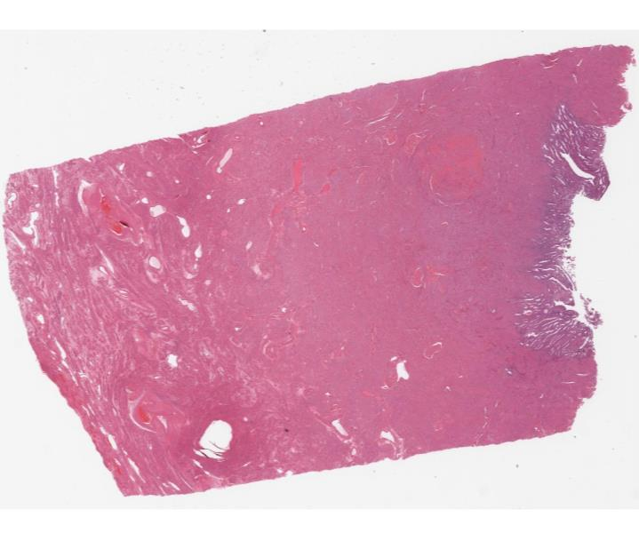
Uterus, full thickness. The darker glandular endometrium is the strip on the right; everything else is myometrium. Almost the whole organ is muscle.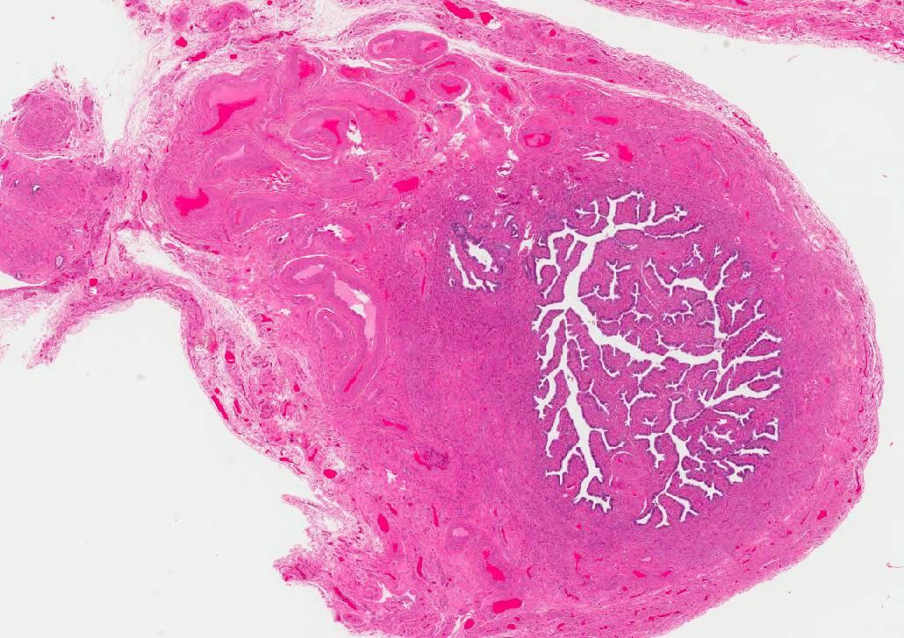
Fallopian tube, cross-section. That intricate branching lumen is the mucosa thrown into plicae — nothing else in the body looks like this, so it identifies the tube on sight.The Tract, Organ by Organ
Click any structure for its epithelium, the feature that identifies it down the scope, and what goes wrong with it.
The gynecologic tract — what lines what
Click any structure →Select a structure to see what lines it, how you recognise it, and why it matters.
Vulva
Labia majora — true skin: keratinized stratified squamous with hair follicles and eccrine, apocrine and sebaceous glands. Labia minora — non-keratinized stratified squamous, usually no adnexae. That single difference is how you tell them apart on a slide.
Bartholin’s glands sit posterolateral to the introitus: mucinous acini, ducts lined by transitional epithelium, becoming squamous at the orifice. Skene’s glands are the paired periurethral mucus-secreting glands.
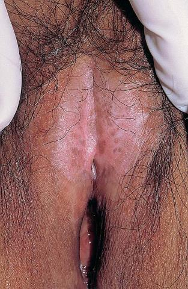
Lichen sclerosus — pale, atrophic, thinned skin. Pathology: lichen sclerosus (inflammatory, and a risk factor), leukoplakia, and squamous cell carcinoma.Vagina
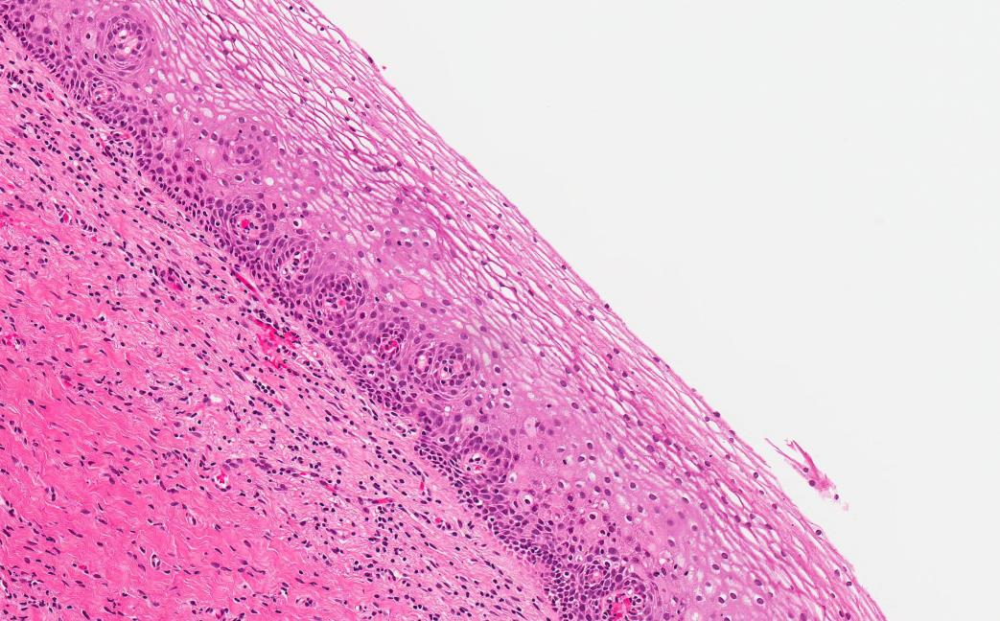
Non-keratinizing stratified squamous, no keratin layer at the surface and no glands.Non-keratinizing stratified squamous, and importantly no glands — vaginal lubrication is transudate plus cervical mucus, not vaginal secretion.
The epithelium is estrogen-dependent: estrogen loads it with glycogen, which lactobacilli ferment to lactate and keep the pH acidic.
After menopause estrogen falls, the epithelium thins and glycogen drops — atrophic vaginitis, and a rise in pH.Cervix
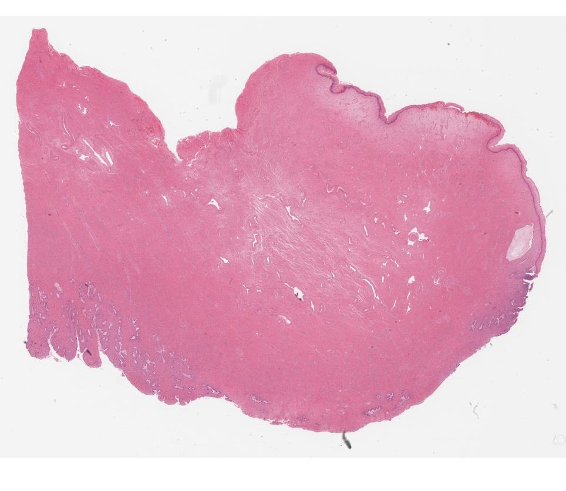
Squamous meeting glandular epithelium at the cervix.The lowermost part of the uterus, connecting uterus to vagina. It has two different epithelia, which is the whole point of it:
Ectocervix (facing the vagina) — non-keratinizing stratified squamous. Endocervix (the canal) — mucus-secreting columnar glandular. Between them, the transformation zone.
The transformation zone is the most common site of cervical neoplasia — covered in its own section below.Endometrium
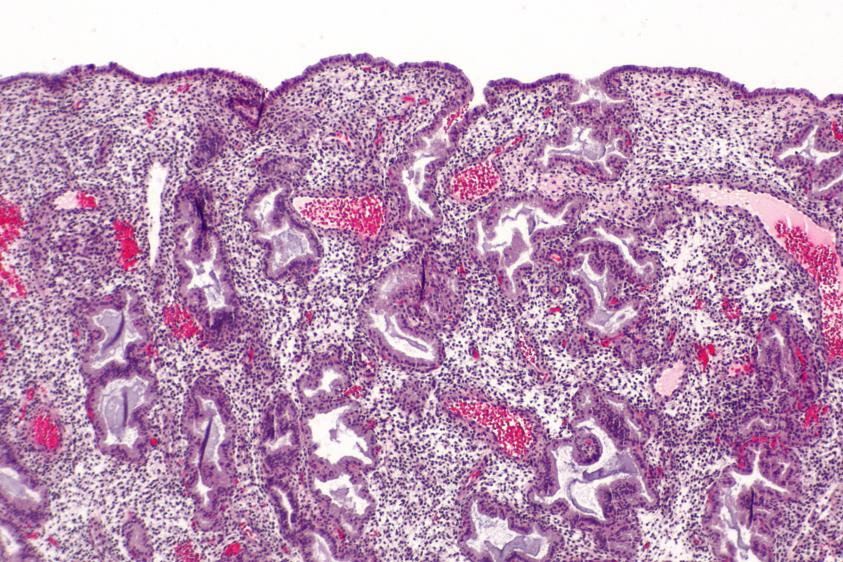
Secretory endometrium at low power — surface at the top, coiled glands below.Glands plus stroma, in two layers. The functionalis is the outer layer that responds to hormones and is shed each month. The basalis is the deep layer that is never shed and regenerates the functionalis afterwards.
Its appearance changes completely across the cycle — that is the second half of this lecture.
If the basalis is destroyed (over-aggressive curettage, infection), the functionalis cannot regrow — intrauterine adhesions and amenorrhoea, or Asherman syndrome.Myometrium
Thick interlacing bundles of smooth muscle — the bulk of the uterus, and what generates labour contractions. Covered on the outside by serosa (peritoneum).
Leiomyoma (fibroid) is a benign smooth muscle tumour arising here — the commonest tumour of the female genital tract.Fallopian tube
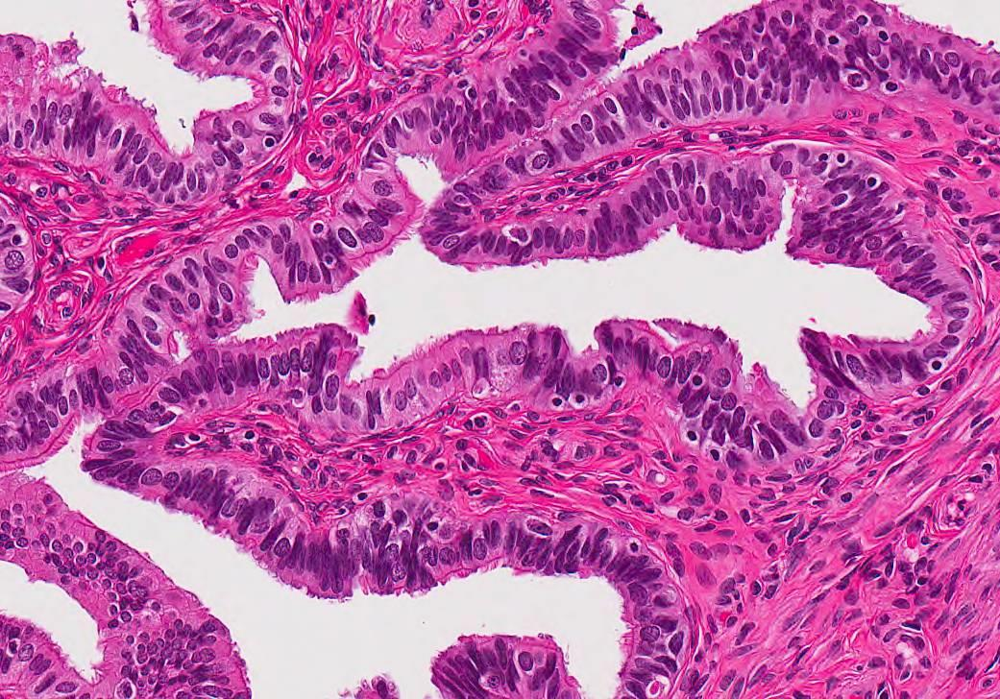
Tube mucosa: branching plicae lined by ciliated and secretory columnar cells.From uterus outward: intramural (within the uterine wall) → isthmus (narrow) → ampulla (wide, longest) → infundibulum, ending in the fimbriae that drape over the ovary.
Mucosa is ciliated and secretory columnar epithelium thrown into elaborate folds (plicae) — the branching, papillary lumen is how you recognise a tube instantly. Muscularis provides the peristalsis that moves the ovum.
Fertilization normally happens in the ampulla, and the ampulla is also the single commonest site of ectopic implantation.Ovary
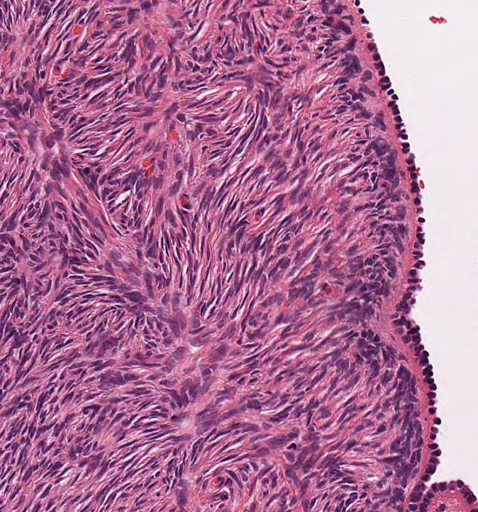
Cuboidal surface epithelium over the dense spindled stroma of the cortex.Surface epithelium — a single layer of cuboidal cells. Cortex — the outer layer, holding the stroma, the specialised granulosa and theca cells, and every germ cell and follicle. Medulla — inner stroma, vessels and nerves. Hilum — where those vessels and nerves enter.
Two jobs: mature oocytes for ovulation, and make sex steroids. Ovarian tumours are classified by which of these three cell populations they arise from — see the last section.The Transformation Zone
If you take one thing from the cervix, take this. Two epithelia meet at the cervix, and where they meet, one is actively converting into the other.
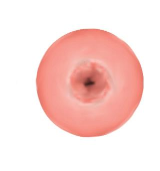
The cervix, face on. Ectocervix around the outside, the os in the middle. The same view, labelled. The transformation zone is the ring between the two epithelia.
The same view, labelled. The transformation zone is the ring between the two epithelia.
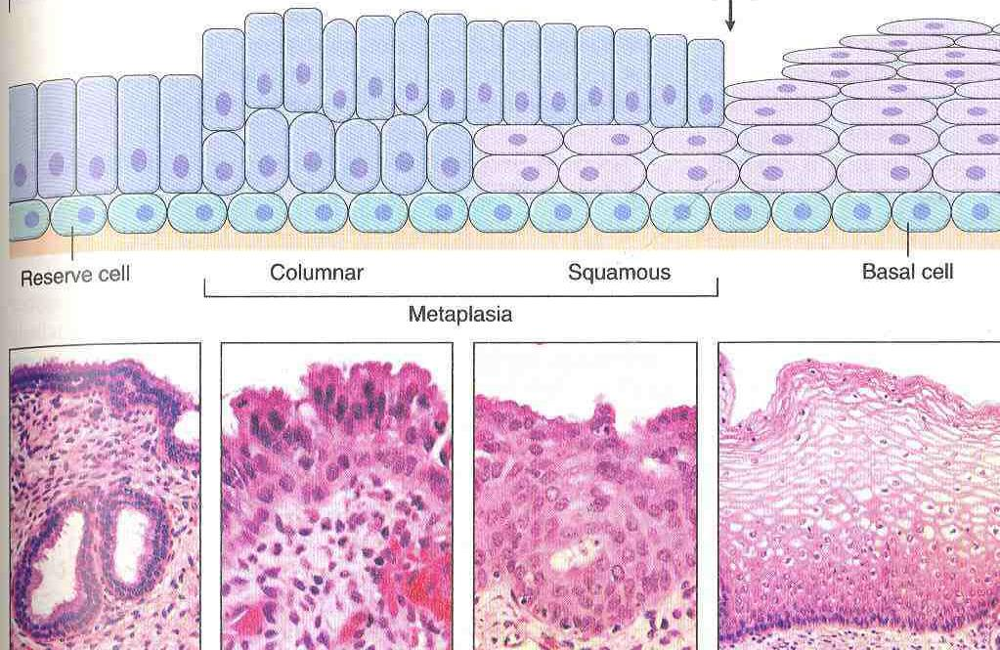
Metaplasia means actively dividing immature cells. HPV infects dividing basal-type cells, and integration into a dividing cell is what allows persistent infection to progress to dysplasia. Mature squamous epithelium and mature glandular epithelium are both far less vulnerable — the vulnerable population exists only in the transformation zone, and only while metaplasia is going on.
That is the entire rationale for cervical screening: the Pap test scrapes the transformation zone, and a sample without endocervical or metaplastic cells may not have reached it. If cytology is abnormal, biopsy follows for tissue diagnosis.
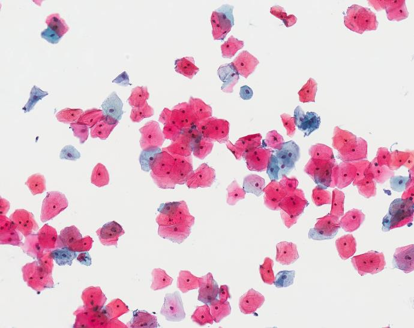
Pap test — cytology. Loose cells scraped from the zone. Endocervical or metaplastic cells on the slide are the evidence the transformation zone was actually reached.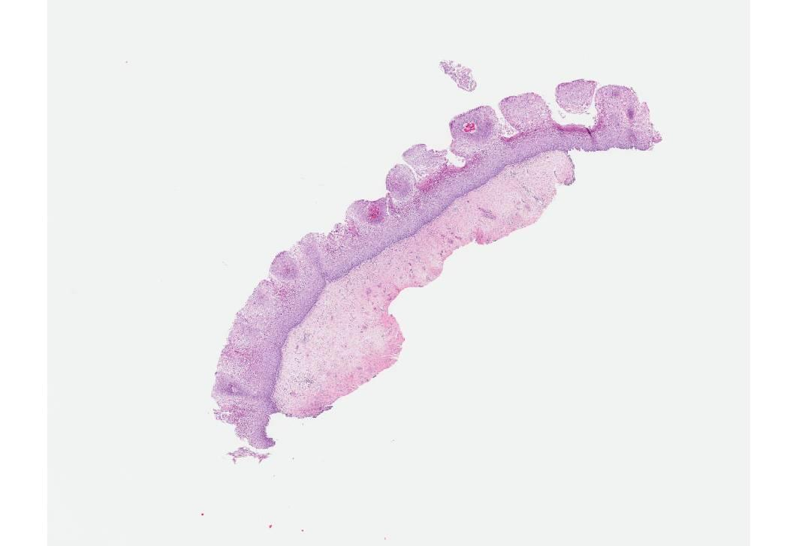
Biopsy — histology. Intact tissue, so the epithelium can be assessed through its full thickness. This is what follows an abnormal Pap.The Endometrium Through the Cycle
Three appearances, and each one is a direct readout of which hormone is dominant. If you can name the hormone, you can predict the picture.
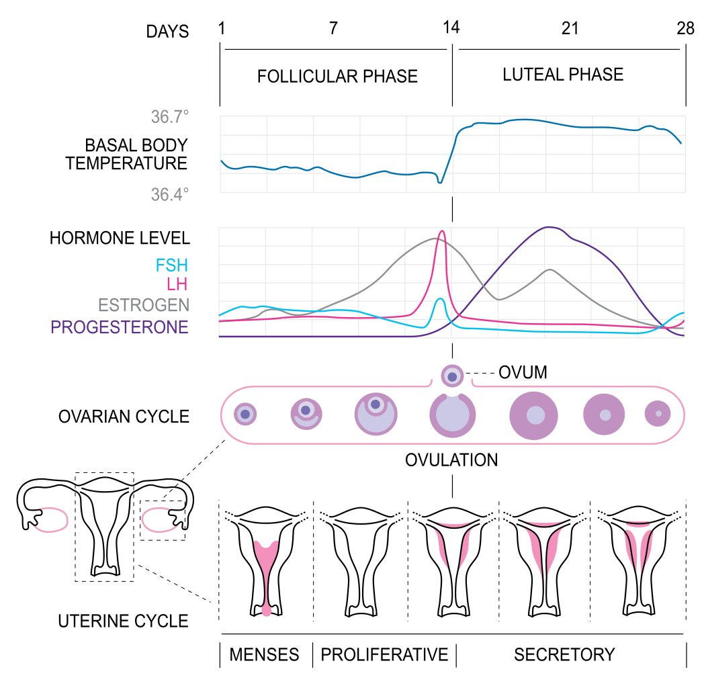
 1 · Proliferative, low power. Numerous small, round, evenly spaced glands — these are straight tubes cut across.
1 · Proliferative, low power. Numerous small, round, evenly spaced glands — these are straight tubes cut across.
 3 · Menstrual. The architecture has gone: collapsed crumbling stroma, broken glands, and blood everywhere.
3 · Menstrual. The architecture has gone: collapsed crumbling stroma, broken glands, and blood everywhere.
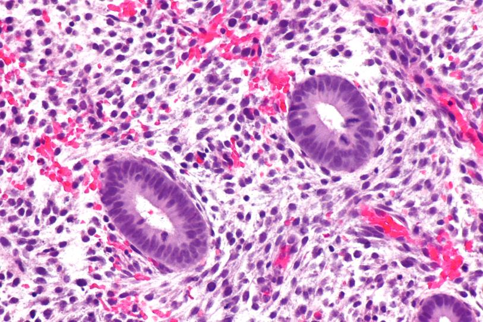
Proliferative, high power. Pseudostratified, crowded, darkly staining nuclei with mitotic figures in both gland and stroma. Mitoses are the finding. Secretory, high power. Nuclei pushed to the base by secretory vacuoles, secretion in the lumen, and no mitoses.
Secretory, high power. Nuclei pushed to the base by secretory vacuoles, secretion in the lumen, and no mitoses.
| If you see… | It is… |
|---|---|
| Straight tubular glands + mitoses | Proliferative — estrogen-driven |
| Coiled sawtooth glands + secretions, no mitoses | Secretory — progesterone-driven, so ovulation has happened |
| Collapsed stroma, broken glands, blood | Menstrual |
Endometrial sampling answers a small number of specific questions: infertility (is the endometrium secretory, i.e. did she ovulate?), abnormal uterine bleeding, and any post-menopausal bleeding, where the job is to rule out malignancy. It is also indicated when endometrial cells appear on a Pap smear in a woman over 45 — those cells have no business being there.
The link back to physiology: a secretory endometrium is proof of ovulation, because only the corpus luteum makes enough progesterone to produce it. Persistent proliferative endometrium in a woman who should be cycling means unopposed estrogen — the setup for hyperplasia.
The Ovary Through the Cycle
The follicle is a structure that grows, ruptures, converts into an endocrine gland, and then scars. Each stage has a name and a look.
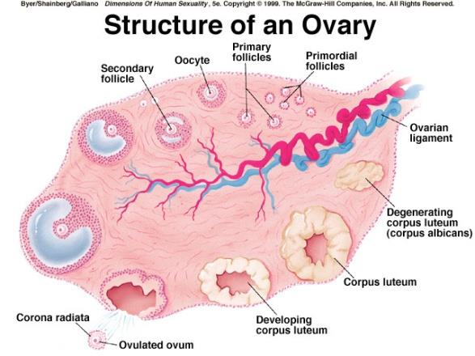
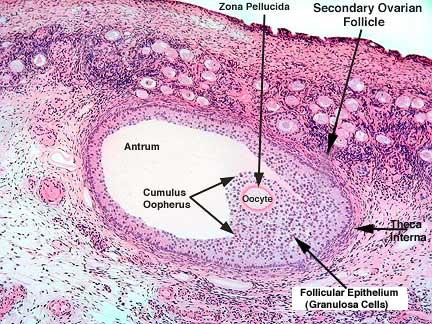
Developing follicle in the cortex — oocyte, granulosa layers around it, theca outside that.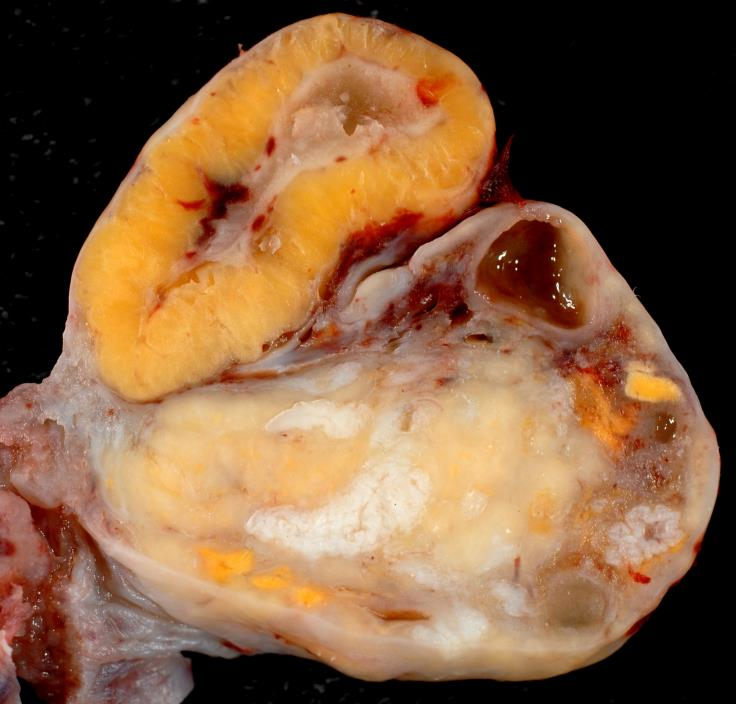
Corpus luteum, low power. Large and conspicuously folded — the collapsed wall of the ruptured follicle.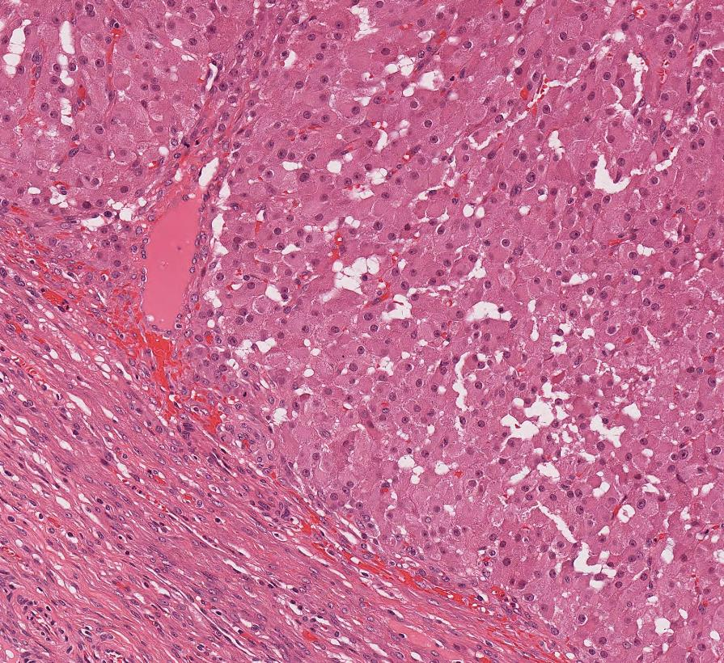
Corpus luteum, high power. Large pale granulosa lutein cells, with the smaller, darker theca lutein band at the edge (lower left).| Ovarian cell of origin | Benign | Borderline | Malignant |
|---|---|---|---|
| Surface epithelial | Serous cystadenofibroma | Serous borderline tumour | High-grade serous carcinoma |
| Germ cell | Teratoma (usually benign) · dysgerminoma (malignant) | ||
| Sex cord–stromal | Fibroma · granulosa cell tumour | ||
The classification is not arbitrary trivia — it follows the three cell populations in the section above. A granulosa cell tumour comes from the cell that makes estradiol, and behaves accordingly (precocious puberty, post-menopausal bleeding, endometrial hyperplasia).
Adapted (not reproduced verbatim) from Dr. Emily Goebel, MD FRCPC, Pathology and Laboratory Medicine, LHSC / Schulich — “Histology of the Gynecologic Tract” (acknowledgments: Dr. Nancy Chan, Dr. Paul Plantinga). Micrographs and diagrams are taken from the lecture slides and are reproduced here for personal study; original sources are credited in the captions where the deck names them (Robbins and Cotran, Pathologic Basis of Disease 2005; Byer, Shainberg & Galliano, Dimensions of Human Sexuality 5e). The two schematics that are mine — the shared wall plan and the interactive tract map — are marked as such in their captions; they organise material the deck presents as a list rather than duplicating a figure it already has.
Added beyond the slides: the four named parts of the tube in order, the Bartholin duct–acinar epithelial sequence, the glycogen/lactobacillus basis of vaginal pH, the mechanistic explanation of why the transformation zone is the neoplasia site, Asherman syndrome, and the physiological link between a secretory endometrium and proof of ovulation. Bartholin histology per StatPearls NBK557803 and the Bartholin gland pathology literature.